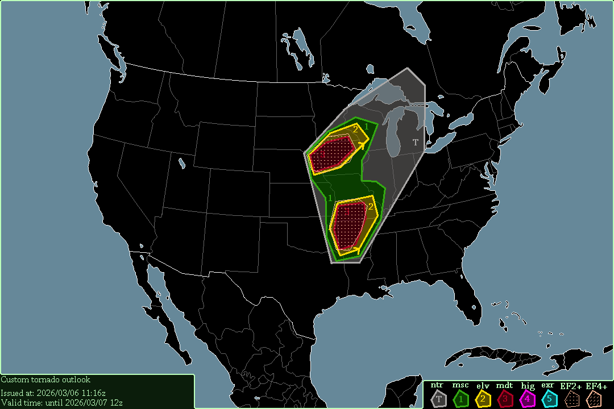

A level 3 moderate risk exists in Iowa & southern minnesota, starting at 20:00 UTC, 2026/03/06.
A level 3 moderate risk exists in Arkansas & southern Missouri, also starting at 20:00 UTC.
Severe thunderstorms are expected surrounding all tornado risks & stretching into southern ontario, starting now.
2 areas of severe thunderstorms exist; one in Arkansas & southern Missouri, & another one in Iowa & southern Minnesota. In both of these I expect multiple tornadoes, due to 0-3km SRH reaching 500 m²/s² in Iowa & 300 m²/s² in Arkansas. 0-1km SRH is also high, reaching almost 400 m²/s² in Iowa & 200 m²/s² in Arkansas. CAPE in Iowa is quite low though, at only 500 J/kg, but I still expect multiple tornadoes. There is also an area in Texas that will probably get severe weather, but that happens around 10z, so it will be tackled in tomorrow's outlook instead.
-- Cenn Devel, 2026/03/06 11:16z.